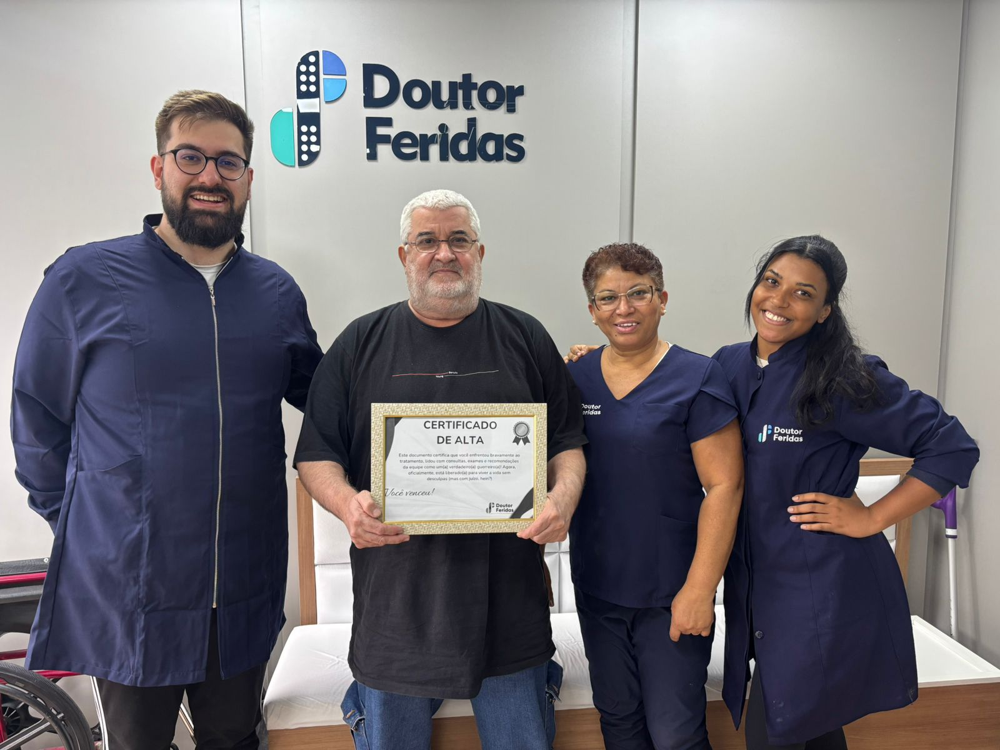
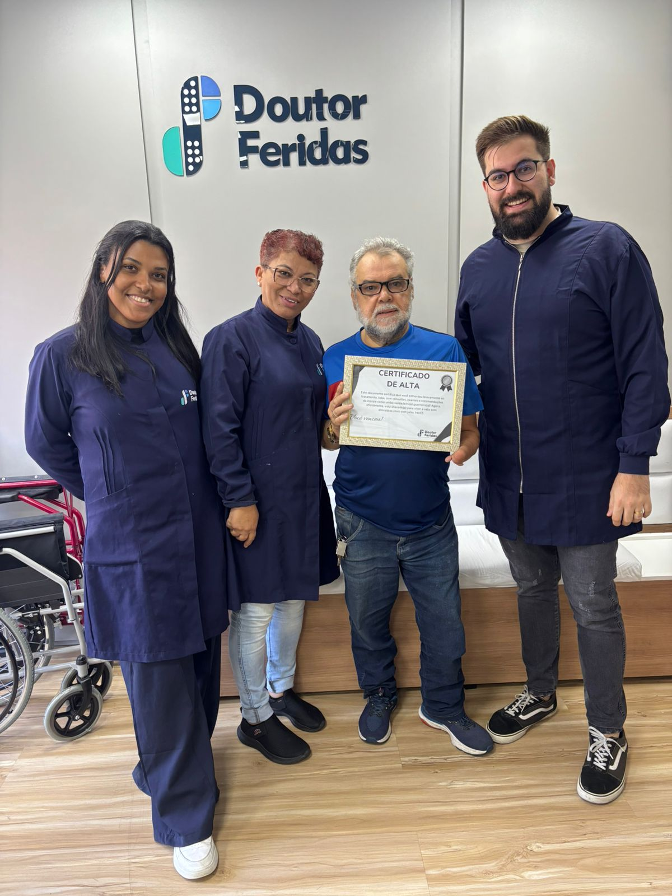

Roteiro de Depoimento
de Paciente
Guia para Enfermeiros — Como Colher a História de Quem Cicatrizou
Leia antes de começar
Isso é uma conversa, não uma entrevista clínica.
Você não precisa fazer todas as perguntas.
Não corrija, não complete as frases. Deixe o silêncio.
Grave o áudio (com permissão) ou anote as frases exatas — não parafaseie.
Quando usar: Na consulta de alta ou na última sessão de acompanhamento.
ANTES
Objetivo: fazer o paciente reviver como era a vida com a ferida
"Antes de a gente começar a falar da melhora, me conta: como tava a sua vida quando você chegou aqui?"
"Como era o dia a dia com essa ferida? O que você não conseguia mais fazer?"
"Há quanto tempo você estava com esse problema antes de chegar aqui?"
"O que você já tinha tentado antes de nos procurar?"
"Como você se sentia nessa época?"
AGUARDE. Não preencha o silêncio. As frases mais fortes saem depois de uma pausa.
O MOMENTO QUE DECIDIU BUSCAR AJUDA
Objetivo: identificar o gatilho — o que fez ele finalmente agir
"O que foi que fez você decidir buscar um especialista? O que aconteceu?"
"Alguém te indicou, você pesquisou, ou como foi que chegou até a gente?"
"Quando chegou aqui, o que esperava encontrar? Você acreditava que ia funcionar?"
Muitos vão dizer que não acreditavam. Deixe essa frase sair — ela vale ouro para o depoimento.
DURANTE
Objetivo: capturar o que foi diferente no tratamento
"Como foi o tratamento pra você? O que chamou atenção?"
"Teve algum momento em que você percebeu que estava melhorando de verdade?"
"Como você se sentiu sendo atendido aqui?"
DEPOIS
★ BLOCO MAIS IMPORTANTEObjetivo: a transformação — o que mudou depois que a ferida fechou
"Quando você percebeu que a ferida tinha fechado de vez, o que você sentiu?"
"O que você consegue fazer hoje que não conseguia antes?"
"Teve alguma coisa pequena — uma coisa simples do dia a dia — que você voltou a fazer e que te deu uma alegria grande?"
AGUARDE. Esta pergunta é onde saem as frases mais humanas: calçar um sapato, brincar com o neto, usar saia, dormir a noite toda. Não preencha o silêncio.
O NOVO SONHO
Objetivo: o que a cicatrização abriu de possibilidade
"E agora, o que você quer fazer que ficou parado por causa da ferida?"
"Tem alguma coisa que você ficou com vontade de fazer mas não conseguia por causa disso tudo?"
"O que você diria pra uma pessoa que tá passando hoje pelo que você passou antes?"
Esta pergunta entrega a frase que vai direto para o coração de quem ainda está sofrendo. É o melhor depoimento que existe.
ENCERRAMENTO
"Você se importa se a gente usar o que você contou pra ajudar outras pessoas que estão passando pela mesma coisa?"
Se aceitar, pergunte:
"Posso usar seu nome? Ou prefere que a gente use só o primeiro nome?"
NÃO ESQUEÇA DA FOTO!
Antes de encerrar, peça para tirar uma foto do paciente segurando o Certificado de Alta.
Entregue o Certificado de Alta ao paciente.
Peça licença para tirar uma foto com o certificado em mãos — sorrindo.
Envie a foto para o grupo da unidade no WhatsApp.
Exemplos de como deve ficar:




A foto com o certificado junto ao depoimento tem um impacto muito maior nas redes sociais.
REFERÊNCIA RÁPIDA
Quando o paciente tiver pouco tempo ou for mais reservado — use só estas 5
Como era a sua vida antes de chegar aqui?
O que você já tinha tentado antes?
Você acreditava que ia funcionar quando chegou?
Que coisa simples você voltou a fazer depois que a ferida fechou?
O que você diria pra alguém que tá passando pelo que você passou?